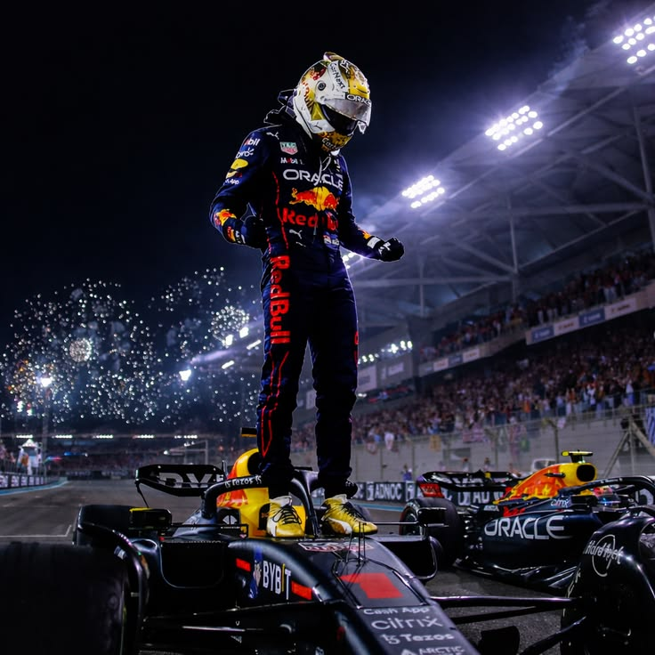
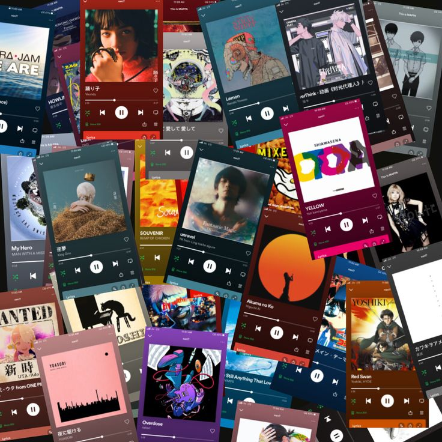
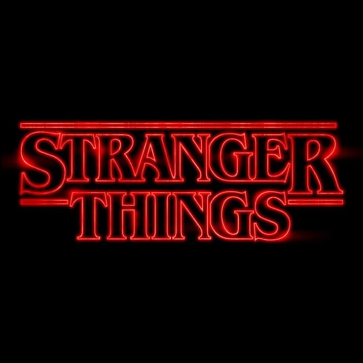
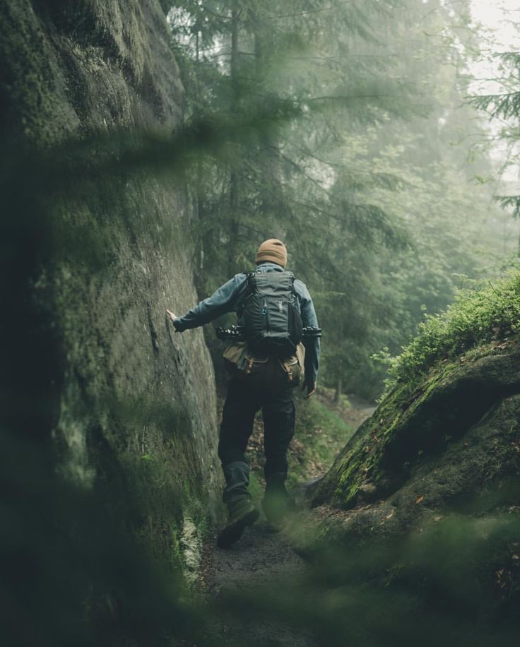
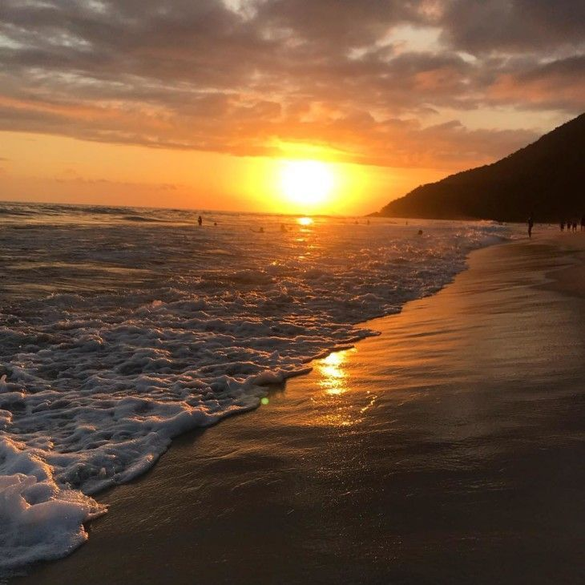

CHRISTIAN LUIS
Sujeto 021 • Estudiante de Administración de Negocios en la Universidad Católica San Pablo División: Introducción a la Ciencia de la Computación
SINTONIZANDO VECNA'S CURE...
Expediente Hawkins: Sobre mí
[DATOS CURIOSILLO]: ¿Sabías que los pingüinos gentoo tienen un ritual de apareamiento muy particular donde los machos buscan cuidadosamente una piedra y se la ofrecen a la hembra como una especie de "propuesta de matrimonio"?
Mi nombre es Luis, actualmente cursando el 2.° año de la carrera de Administración de Negocios (tengo 21 años de edad). Mi color favorito es el verde. Tengo un gato de color naranja llamado Argos, en nombre de la ciudad del valle de las naranjas de Grecia, mi objetivo con este curso es explorar los limines de la computacion en el entorno empresarial y como este puede ser mas eficiente en el trabajo..
Intereses personales
GATE OPEN




FORTALEZAS
Docente